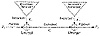
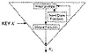
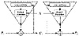

Click Here!


|
Click Here! |
|
| |
|
|
|
To access the contents, click the chapter and section titles.
Applied Cryptography, Second Edition: Protocols, Algorthms, and Source Code in C (cloth)
9.4 Stream CiphersStream ciphers convert plaintext to ciphertext 1 bit at a time. The simplest implementation of a stream cipher is shown in Figure 9.6. A keystream generator (sometimes called a running-key generator) outputs a stream of bits: k1, k2, k3,..., ki. This keystream (sometimes called a running key) is XORed with a stream of plaintext bits, p1, p2, p3,..., pi, to produce the stream of ciphertext bits.
At the decryption end, the ciphertext bits are XORed with an identical keystream to recover the plaintext bits.
Since
this works nicely. The system’s security depends entirely on the insides of the keystream generator. If the keystream generator outputs an endless stream of zeros, the ciphertext will equal the plaintext and the whole operation will be worthless. If the keystream generator spits out a repeating 16-bit pattern, the algorithm will be a simple XOR with negligible security (see Section 1.4). If the keystream generator spits out an endless stream of random (not pseudo-random, but real random—see Section 2.8) bits, you have a one-time pad and perfect security. The reality of stream cipher security lies somewhere between the simple XOR and the one-time pad. The keystream generator generates a bit stream that looks random, but is actually a deterministic stream that can be flawlessly reproduced at decryption time. The closer the keystream generator’s output is to random, the harder time a cryptanalyst will have breaking it. 
If, however, the keystream generator produces the same bit stream every time it is turned on, the resulting cryptosystem will be trivial to break. An example will show why. If Eve has a ciphertext and associated plaintext, she can XOR the plaintext and the ciphertext to recover the keystream. Or, if she has two different ciphertexts encrypted with the same keystream, she can XOR them together and get two plaintext messages XORed with each other. This is easy to break, and then she can XOR one of the plaintexts with the ciphertext to get the keystream. Now, whenever she intercepts another ciphertext message, she has the keystream bits necessary to decrypt it. In addition, she can decrypt and read any old ciphertext messages she has previously intercepted. When Eve gets a single plaintext/ciphertext pair, she can read everything. This is why all stream ciphers have keys. The output of the keystream generator is a function of the key. Now, if Eve gets a plaintext/ciphertext pair, she can only read messages encrypted with a single key. Change the key, and the adversary is back to square one. Stream ciphers are especially useful to encrypt never-ending streams of communications traffic: a T-1 link between two computers, for example. A keystream generator has three basic parts (see Figure 9.7). The internal state describes the current state of the keystream generator. Two keystream generators, with the same key and the same internal state, will produce the same keystream. The output function takes the internal state and generates a keystream bit. The next-state function takes the internal state and generates a new internal state. 9.5 Self-Synchronizing Stream CiphersFor a self-synchronizing stream cipher, each keystream bit is a function of a fixed number of previous ciphertext bits [1378]. The military calls this ciphertext auto key (CTAK). The basic idea was patented in 1946 [667]. 
Figure 9.8 shows a self-synchronizing stream cipher. The internal state is a function of the previous n ciphertext bits. The cryptographic complexity is in the output function, which takes the internal state and generates a keystream bit. Since the internal state depends wholly on the previous n ciphertext bits, the decryption keystream generator will automatically synchronize with the encryption keystream generator after receiving n ciphertext bits. In smart implementations of this mode, each message begins with a random header n bits long. That header is encrypted, transmitted, and then decrypted. The decryption will be incorrect, but after those n bits both keystream generators will be synchronized. The down side of a self-synchronizing stream cipher is error propagation. For each ciphertext bit garbled in transmission, the decryption keystream generator will incorrectly produce n keystream bits. Therefore, for each ciphertext error, there will be n corresponding plaintext errors, until the garbled bit works its way out of the internal state. Security Problems Self-synchronizing stream ciphers are also vulnerable to a playback attack. First Mallory records some ciphertext bits. Then, at a later time, he substitutes this recording into current traffic. After some initial garbage while the receiving end resynchronizes, the old ciphertext will decrypt as normal. The receiving end has no way of knowing that this is not current data, but old data being replayed. Unless timestamps are used, Mallory can convince a bank to credit his account again and again, by replaying the same message (assuming the key hasn’t been changed, of course). Other weaknesses in this type of scheme could be exploited in the cases of very frequent resynchronization [408]. 
9.6 Cipher-Feedback ModeBlock ciphers can also be implemented as a self-synchronizing stream cipher; this is called cipher-feedback (CFB) mode. With CBC mode, encryption cannot begin until a complete block of data is received. This is a problem in some network applications. In a secure network environment, for example, a terminal must be able to transmit each character to the host as it is entered. When data has to be processed in byte-sized chunks, CBC mode just won’t do.
|
|
Products | Contact Us | About Us | Privacy | Ad Info | Home
Use of this site is subject to certain Terms & Conditions, Copyright © 1996-1999 EarthWeb Inc. All rights reserved. Reproduction whole or in part in any form or medium without express written permision of EarthWeb is prohibited.
|
){kind=link}
){kind=link}
){kind=link}
){kind=link}
){kind=link}
){kind=link}